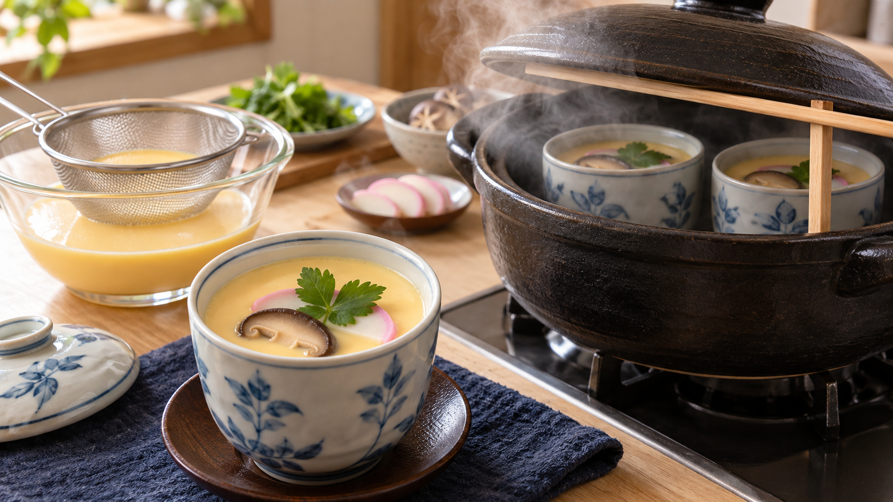

茶碗蒸しは、蒸気を85〜90℃に保つ。「す」は泡の抜け殻
ふたを開けると、表面に小さな穴が並んでいる。
スプーンを入れると、中にも細長い空洞がある。味は悪くないのに、舌触りだけがぼそぼそしてしまう。
この穴が、茶碗蒸しの「す」だ。原因は卵を混ぜた回数より、固まり始めた卵液の中で泡を大きくしてしまう熱にある。
今日の結論
なめらかに仕上げるなら、卵液を沸かさない。
蒸し器の中を85〜90℃ほどに保ち、卵液が固まったところで加熱を終える。 家庭の鍋なら、湯が沸いて器を入れたあとに最弱火へ落とし、ふたを少しずらして蒸気を逃がすと調整しやすい。
卵液は泡立てずに混ぜ、こしてから器へ注ぐ。ただし、表面の小さな泡を取るだけでは十分ではない。見えない空気も卵液に溶けているため、最後に効くのは加熱の温度だ。
卵は、だしを抱えた網目になる
生の卵では、たんぱく質が小さく折りたたまれ、水分の中を動いている。温めると形がほどけ、隣どうしでつながっていく。
このつながりが、だしを抱えたやわらかな網目を作る。これを加熱ゲルという。魚をすくう網の目を細かくしたようなもので、網がほどよくつながれば、だしを含んだまま滑らかに固まる。
茶碗蒸しの物性を調べた一次研究では、卵液は77℃付近から固まり始め、温度が上がるほど網目が強くなった。つまり、茶碗蒸しには「固める熱」は必要だが、勢いよく沸かす必要はない。
「す」は、膨らんだ泡を卵が固めた跡
卵液には、混ぜたときに入る泡のほか、目には見えない空気が溶けている。温度が上がると、その空気は液体に居づらくなり、小さな泡へ集まる。さらに局所的に沸騰すると、水蒸気も加わって泡が大きくなる。
その周りで卵の網目が固まると、泡は逃げられない。加熱を終えて温度が下がれば、中の水蒸気は縮む。それでも卵の網目は元へ戻らないため、泡が膨らんだ跡だけが穴として残る。
「す」の形成を調べた研究では、穴の内側に気泡が確認され、低い温度でゆっくり予熱するほど穴ができにくくなった。続く研究でも、卵液から空気を抜くと泡が減り、再び混ぜて空気を入れると泡が戻った。
ここから分かるのは、「す」は卵が焦げた穴ではないということだ。泡が育つ速さと、卵が固まる速さが重なってできる。家庭では、卵液を静かに扱い、沸騰させない温度で固める。この二つを同時に行うのが近道になる。
強い熱は、網目まで締めすぎる
高い温度で加熱を続けると、卵の網目は強く縮み、抱えていた水分を押し出す。この水分が表面や穴の中へにじむ変化を離水という。
卵の加熱調理をまとめた調理科学の解説では、希釈した卵液は85〜90℃で保って固め、内部で沸騰すると強い凝集が起こり、「す」の原因になると整理されている。また、湯せんで焼くカスタードの一次研究でも、温度上昇を緩やかにすると、水分が抜けにくく、表面の穴も少なくなった。
火を弱めるのは、単に中心までゆっくり温めるためではない。外側だけを先に締めすぎず、泡が大きくなる前に全体を静かに固めるためだ。
今日の一皿：弱い蒸気で作る基本の茶碗蒸し
材料（2人分）
- 卵 2個（殻を除いて約100g）
- だし 300mL
- うす口しょうゆ 小さじ2
- みりん 小さじ1
- 塩 ひとつまみ
- 生しいたけ 1枚
- かまぼこ 4切れ
- 三つ葉 少々
作り方
- だしへ、うす口しょうゆ、みりん、塩を混ぜ、室温まで冷ます。しいたけは薄切りにする。
- 卵をボウルへ割り、箸先を底につけたまま、白身を切るように静かに混ぜる。泡立て器で空気を抱き込まない。
- だしを少しずつ加えて混ぜ、目の細かいざるでこす。表面の大きな泡はスプーンで取る。
- 耐熱の器へ、しいたけとかまぼこを入れ、卵液を注いでふたをする。器のふたがなければ、アルミ箔を軽くかぶせる。
- 鍋に2〜3cmの湯を沸かし、布巾を敷いた上へ器を置く。鍋のふたを少しずらし、すぐ最弱火にする。蒸気の温度は85〜90℃が目安。温度計がなければ、湯面が激しく揺れず、細かな泡が静かに続く火加減にする。
- 12分蒸し、器をそっと揺らす。中央までひとまとまりで揺れ、竹串を刺して透明なだしが出れば火を止める。液状の卵が付く場合は、最弱火のまま1分ずつ追加する。
- 三つ葉をのせ、ふたをして1分置く。余熱で表面を整えてから食卓へ出す。
器が大きい、卵液が冷たい、具が多い場合は時間が延びる。時計だけで強火を続けず、中央の揺れ方を見て終わりを決めよう。
この考え方を、プリンや卵豆腐にも広げる
覚えるべきなのは、茶碗蒸しだけの火加減ではない。水分の多い卵料理は、沸かして固めるのではなく、網目ができる温度へ静かに近づけると考える。
プリンなら、型を湯せんへ入れてオーブンの熱をやわらげる。卵豆腐なら、蒸し器のふたをずらして蒸気を逃がす。鍋で作るカスタードなら、鍋底をこすりながら弱火で温め、固まり始めたら火から離す。
買い物でも応用できる。深く厚い器は中心が温まるまで外側へ熱が入り続けるため、浅めの器より温度差が大きくなりやすい。器をそろえるだけでも、同じタイミングで火を止めやすくなる。
今日のまとめ
茶碗蒸しの「す」は、温められて大きくなった泡を、卵の網目が固めた跡だ。
卵液を静かに混ぜるだけでなく、蒸し器を85〜90℃ほどに保ち、固まったら加熱を終える。これで泡の成長と、網目の締まりすぎを抑えやすい。
次に蒸すときは、時間より先に蒸気を見る。湯が激しく暴れていたら、まず火を一段下げよう。
参考文献
- 久塚智明, 小川宣子, 渡邊乾二. 茶碗蒸しの物性に及ぼす影響因子の解析（第2報）. 日本調理科学会誌. 2000;33(4):451-455. https://doi.org/10.11402/cookeryscience1995.33.4_451
- 富江ハス子, 大久保一良. 加熱調理におけるすだち現象に関する研究（第1報）鶏卵ゲルの「す」形成主要因の再検討. 家政学雑誌. 1982;33(8):419-424. https://cir.nii.ac.jp/crid/1390282681307887104
- 富江ハス子, 大久保一良. 加熱調理におけるすだち現象（第2報）溶存気体の気泡化と卵ゲルの「す」形成との関連. 家政学雑誌. 1984;35(11):760-764. https://www.jstage.jst.go.jp/article/jhej1951/35/11/35_11_760/_pdf
- 島田淳子. 卵の調理. 調理科学. 1990;23(3):228-233. https://www.jstage.jst.go.jp/article/cookeryscience1968/23/3/23_228/_pdf
- 岩崎ひろ子, 香西みどり, 畑江敬子, 島田淳子. カスタードプディングの内部温度の挙動と湯せんの湯量が昇温速度および製品に及ぼす影響. 日本調理科学会誌. 2004;37(3):273-280. https://doi.org/10.11402/cookeryscience1995.37.3_273